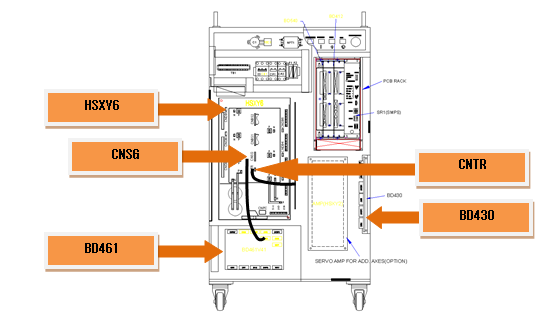
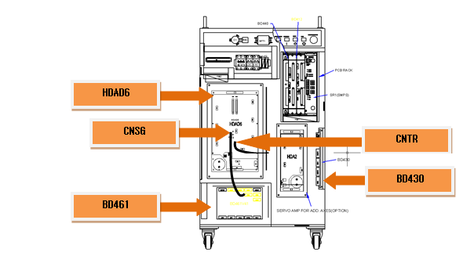
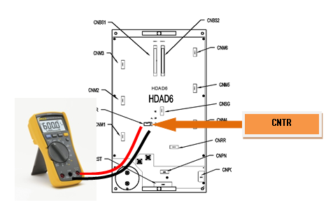
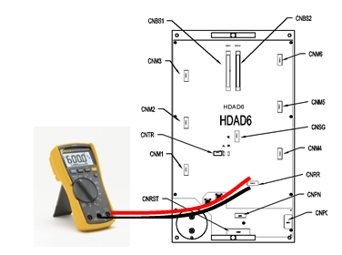
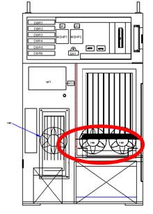

机器人减速或按重力方向下降时发生的再生电力会通过阻抗进行放电，这阻抗过热会发生相关错误。冷却扇性能的下降、过热传感器的电路故障、电阻断线、暂时性急剧动作及持续性机器人动作会导致超过再生放电容量。
|
<马达Off状态下也常发生时> (1) 请检查过热错误感知相关配件。 n 请检查CNTR电缆的电阻。 n 请更换CNSG电缆后检查。 n 请更换伺服驱动装置后检查。 n 请更换BD461/BD430电路板后检查。
<马达On的瞬间常发生时> (2) 请检查电源相关配件。 n 请检查再生电阻连接电缆的电阻值。 n 请更换伺服驱动装置后检查。 n 请检查控制器内部3相电压。 n 请检查控制器输入3相电压。
<根据机器人的再生速度在特定步骤中发生时> (3) 请变更机器人的工作速度并确认错误。 n 请降低机器人的工作速度并确认错误。 n 请检查再生放电电阻值。
< 机器人启动之后经过5分钟以上的状态下发生时 > (4) 请检查控制器的冷却系统及再生电量。 n 请检查各冷却扇的工作状态。 n 请检查冷却扇的电源电压。 n 请降低机器人的工作速度并确认错误。 |
(1) 请检查过热错误感知相关配件。
再生电阻过热错误是通过CNTR连接器监测粘贴于再生电阻的过热传感器两端的on/off状态，并在伺服驱动装置中检测。所感知的错误会通过CNSG电缆在BD461/BD430板上以软件方式进行处理。

图 5.4 Hi4a-0000控制器的再生电阻过热错误相关配件的布置

图 5.5 Hi4a-0010/0012控制器的再生电阻过热错误相关配件的布置
n CNTR 电缆检查
请在连接过热传感器的CNTR连接器上检验传感器是否有异常。传感器在正常状态下应测定为0.1欧姆以下。
请务必先关闭电源后进行检验。
中型机器人用伺服驱动装置: HSXY6
小型机器人用伺服驱动装置: HDAD6
图 5.6 在Hi4a-0000控制器的CNTR上测定电阻值

图 5.7 在Hi4a-0012/0012控制器的CNTR上测定电阻值
n 更换并检查CNSG电缆
将CNSG电缆更换为正常品后，若不发生错误，这就表示电缆连接不良。请把CNSG电缆更换为正常品后使用。
n 更换并检查伺服驱动装置
用于检查再生放电电阻过热错误的零件中，中型是 HSXY6，小型是 HDAD6。请确认当前使用的控制柜的构件后再检查。请将其更换为正常品后确认此类错误是否再次发生。
中型机器人用伺服驱动装置: HSXY6
小型机器人用伺服驱动装置: HDAD6
n 更换并检查BD461/BD430
将 BD461/BD430更换为正常品后，若不发生错误，这就表示该电路板的不良。请把BD461/BD430更换为正常品后使用。

图 5.8 更换Hi4a-0000控制柜的BD461/BD430

图 5.9 更换Hi4a-0010/0012控制柜的BD461/BD430
(2) 请检查电源相关配件。
造成过热错误的原因不仅包括电阻断线或放电控制异常，还包括再生放电电阻值和3相电源电压值的增加。
n 检查再生放电电阻的断线
若在再生放电电阻连接电缆末端上测定出的电阻值为数M欧姆，这就表示电阻断线或内部线路接触不良。请将其再生放电电阻更换为正常品或修理配线。检查时请务必先关闭电源后进行。
中型用 (HSXY6) 再生放电电阻值: 7.5 欧姆 (CNKPPN连接器的K、P间)
Hi4a-0010 恢复放电电阻值: 25 欧姆 (CNRR连接器的K、P间)
Hi4a-0012 恢复放电电阻值: 15 欧姆 (CNRR连接器的K、P间)

图 5.10 在Hi4a-0000 控制器的CNKPPN上测定电阻值

图 5.11 在Hi4a-0010/0012控制器的CNKPPN上测定电阻值
n 更换并检查伺服驱动装置
请更换用于感知再生放电电阻过热错误的模块即中型用HSXY6和小型用HDAD6，并确认此类错误是否再次发生。可能会因模块内部的电路故障而导致此类错误持续发生。
中型机器人用伺服驱动装置: HSXY6
小型机器人用伺服驱动装置: HDAD6
n 检查控制器内部3相电压
再生放电工作大约始于DC 375V。若大于AC 242V的电压输入到伺服驱动装置，可能在马达On之时发生再生放电电阻过热错误。输入电压超过允许范围时，请按照控制器输入电压检查步骤和控制器内部3相电压检查步骤进行检查。
Ø 伺服驱动装置输入电压规格: 3相AC 220V
Ø 马达On时的允许范围: 3相 AC 198V ~ 242V
(3) 请变更机器人的工作速度并确认错误。
机器人减速或按重力方向下降时，伺服驱动装置的直流电压会上升，为了防止因电压上升而引起配件损坏，通过再生放电电阻消耗电力。如果机器人急剧减速或按重力方向迅速移动，易造成相关错误。请根据机器人的工作速度确认错误是否发生。
n 变更机器人工作速度
若因机器人动作而引起的再生电力超过控制器的设计规格，可能会发生再生电阻过热错误。请降低引起错误的步骤速度后使其驱动，并确认错误是否发生。
n 检查恢复放电电阻值
若在再生电阻连接电缆的末端部分上测定出的电阻值超出使用手册中所载值的10%以上，则视为电阻不良。请立即更换相关电阻。检查时请务必关闭电源后进行。具体的测定方法请参考前页。
中型用 (HSXY6)再生放电电阻值: 7.5 欧姆 (CNKPPN 连接器的K、P间)
Hi4a-0010 再生放电电阻值: 25 欧姆 (CNRR 连接器的K、P间
Hi4a-0012 再生放电电阻值 : 15 欧姆 (CNRR 连接器的K、P间)
(4) 请检查控制器的冷却条件及再生电量。
若机器人启动后经过5分钟以上时发生再生电阻过热错误，这就表示控制器冷却系统发生异常或机器人的工作速度超过控制器设计规格。在控制器的后面采用伺服驱动装置的散热板和再生放电电阻冷却所需的冷却扇。
表 5‑1 各控制器别冷却扇的位置
|
Hi4a-0000 |
Hi4a-0010/0012 |
|
|
 |
n 检查各冷却扇的工作状态
若其不旋转或速度过低，请更换该冷却扇。冷却扇的使用寿命根据工作环境及时间的不同而有所不同。
n 检查冷却扇电源电压
若所有冷却扇都不运行，请确认冷却扇的输入电压。冷却扇的输入电压被设定为AC 220V，允许范围是额定电压的10%以内。电压低于10%以上时，冷却扇的旋转速度会下降，导致冷却效果也会下降。若电压过低，请确认冷却扇的电源和控制柜的输入电压。
n 请根据机器人的再生速度确认错误是否发生。
若在连续5分钟以上工作的过程中发生过热错误，这就表示机器人的动作超过控制器冷却能力。请降低机器人的再生速度后确认错误是否发生。若降低速度后未发生再生阻抗过热错误，但不能达到所需的作业速度，请向本公司咨询。